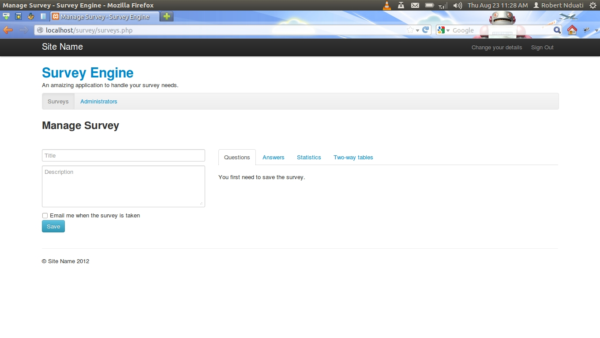
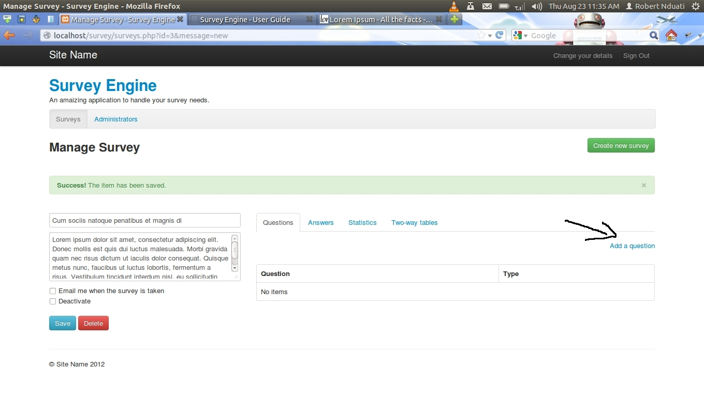
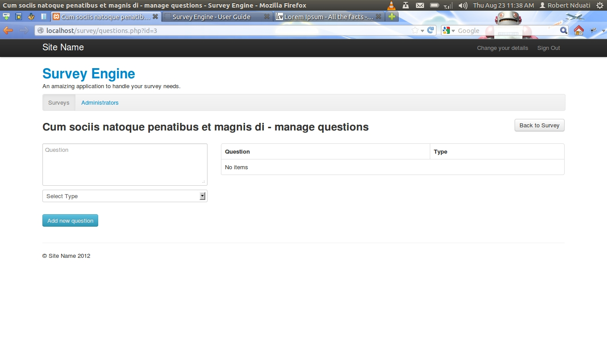
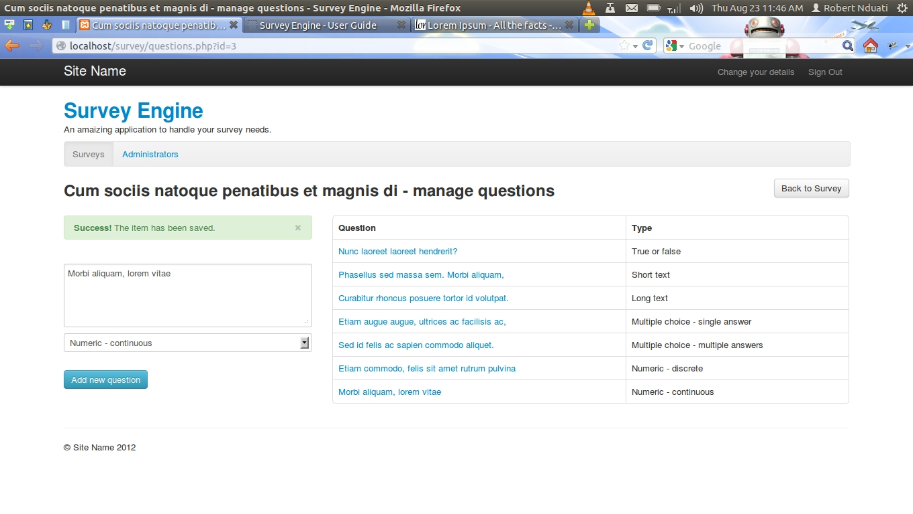
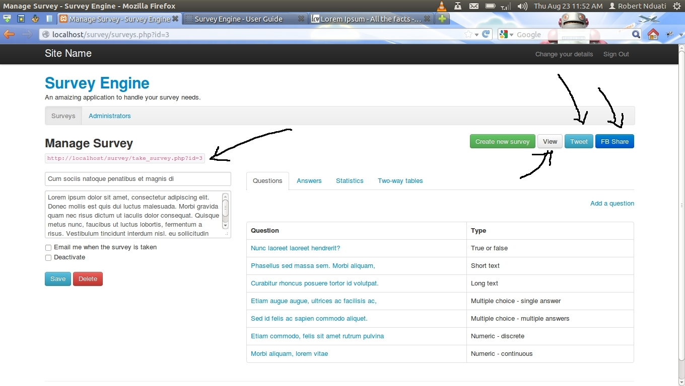
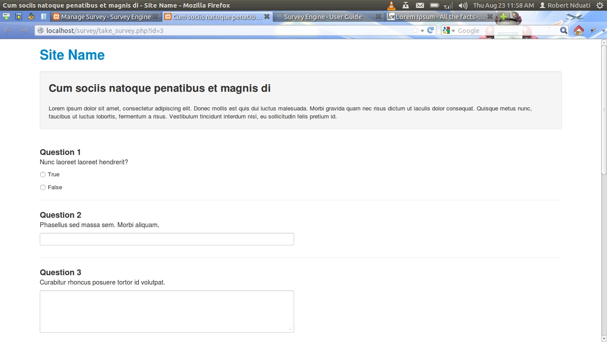
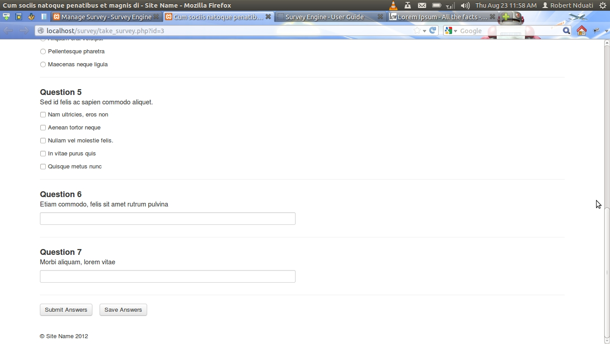

Created By: Robert Nduati , Email: robertnduati.karanja@gmail.com
About
Survey Engine is a PHP script that is ment to helps you set up any number of surveys quickly.
Features:
- Easy to translate to any language since all the text is in one file
- Easy to redesign since the HTML/CSS is separated from the PHP and is built using the twitter bootstrap
- 7 question types
- Easily share the survey using a link or through twitter or facebook
- Get quick summary of results in the admin dashboard
- Two-way table analysis is supported.
- Full featured admin authentication system
- Survey is protect from spam while not stressing the repondent with captcha
Installation:
- Unzip the package
- Open the file /php/config.php with a text editor and put in the details for your server
- Navigate to the script install.php using your browser
- A user account will be created for you. You can change the account later. For the first time sign in with the following credetials:
Email: The one you set for the webmaster in the file /php/config.php
Password: admin
- Delete the file install.php
Getting Started:
- After you have signed in, click on the green button named "create new survey". You will be directed to a page for creating the survey by providing a title and description for it.
- After you have created the survey, you will need to create questions by clicking on the "Add a question" link that will appear in the page. 
- You will be directed to a page for creating the question. To create a question, just type the question and select the type.  
- Once you have created all the questions, click on the button name "Back to Survey". There will be a button for you to view the survey. A link that you can use to share the survey will have appeared. Also there will be buttons for sharing on facebook and twitter. 
- There survey will now be ready to be taken. You will find the results on the "Manage Survey" page in the answers/statistics/two-way table tabs.  
Translating the script:
To translate this script from English to any other language:
- Open the file /str/strings.xml using a text editor
- You will find all the text that appears on all the page there. Simply translate them one by one
Redesign the script's look:
All the HTML that is used in the script is in the folder "html" and the CSS is in the folder "css"
The most important files are /html/private-base.html and /html/public-base.html